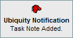

|
|
Remember The Milk Ubiquity |
Latest News
WARNING: Version 0.1.7 of the Ubiquity add-on seems to have broken the commands. I am working on a fix. (25th March 2009)About
A Ubiquity command that interacts with Remember The Milk to manage your tasks. See the releases section for details of the latest version available.
This product uses the Remember The Milk API but is not endorsed or certified by Remember The Milk.
Feedback, comments and suggestions are welcome: contact@garyhodgson.com
Command Summary
- rtm-login
- rtm-refresh
- rtm-logout
- rtm-add-task taskname
- to tasklist
- rtm-add-task taskname
- to tasklist
- on due date
- rtm-add-task taskname
- to tasklist
- on due date
- pri [1|2|3|none]
- url [this|url]
- tags comma,separated,tags
- rtm-complete-task taskname
- rtm-postpone-task taskname
- rtm-prioritise-task taskname
- to [1,2,3,none]
- rtm-move-task taskname
- to tasklist
- rtm-note-task note
- to task
- rtm-view-task taskname
- in tasklist
- pri [1|2|3|none]
- tag tagname
Features
rtm-login
rtm-refresh
rtm-logout
rtm-add-task taskname to tasklist

rtm-add-task taskname on due date to tasklist
rtm-add-task taskname to tasklist on due date pri [1|2|3|none] url [this|url] tags comma,separated,tags
rtm-complete-task task name
rtm_postpone_task task name
rtm_prioritise_task taskname to [1,2,3,none]
rtm_note_task note to task

rtm_move_task task name to tasklist

rtm-view-tasks taskname in tasklist pri [1|2|3|none] tag tagname

Releases
- 0.3.7 - 21st December 2008 - add-task command now allows any abitrary text to be used. A previous change had accidentally restricted this to list only existing tags.
- 0.3.6 - 15th December 2008 - Updated the RTM api URLs.
- 0.3.5 - 11th December 2008 - Quick fix to handle the RTM service being down in a more elegant way.
- 0.3.4 - 9th December 2008
- Added notes belonging to a task to the 'rtm-view-task' command
- Added 'rtm-note-task' command
- 0.3.3 - 12th November 2008 - Quick fix to add tag suggestions to 'rtm-add-task'
- 0.3.2 - 24th October 2008 - Fixes the following bugs, introduced by release 0.1.2 of Ubiquity:
- Tasks not available after logging in.
- Regular task lists missing on the add-task command
- Task lists for complete-task, move-task, etc not updating immediately after adding a task
- 0.3.1 - 10th October 2008 - Small Bug Fixes:
- Task names containing angled brackets were not displaying correctly.
- Instances where task does not contain sub-objects causes tasks not to load.
- 0.3 - 6th October 2008 - Additional Functionality and code rewrite.
- Add task with priority, url and tags.
- Task order is sorted (ala RTM) when viewing tasks.
- New command to move tasks between task lists.
- New command to postpone a task.
- New command to prioritise a task.
- New command to force a refresh with the RTM server.
- Improved preview when adding a task.
- Improved preview when viewing tasks.
- View tasks by priority.
- View tasks by tag.
- View tasks by Smart List.
- View task task name search now case-insensitive.
- 0.2.3 - 2nd October 2008 - Tasks are immediately updated after adding or completing.
- 0.2.2 - 23rd September 2008 - Version 0.2 does not show tasks in Smart Lists, and to make matters worse, tasks can be added to these lists, even though they are dynamically generated. Therefore I have temporarily removed Smart Lists from v0.2 until a better fix is available (hopefully asap)
- 0.2.1 - 22nd September 2008 - Small bug fix to stop rtm-logout complaining if it cannot find a valid ISO date.
- 0.2 - 20th September 2008- Initial release of API version
- New command to add a task to a task list, for a given date/time.
- New command to view tasks by task list.
- New command to set a task to completed.
- View task details: name, due date, priority, due status, url.
- 0.1 - 28 August 2008 - Bookmarklet version created based on an original command by Kevin Kubasik
Known Issues
Version 0.3
- Suggestions are not displayed until a character in the suggestion is actually typed. See Ubiquity bug 359for details.
Sadly it seems that this will not be addressed until Ubiquity version 0.1.4 at the earliest.- Using a modifier as a legitimate part of a variable (e.g. 'rtm-add-task go to the opera to inbox') would cause the Ubiquity command to fail. See Ubiquity bug 358 for details.
Sadly it seems that this will not be addressed until Ubiquity version 0.1.4 at the earliest.- Having some text selected in the page is used as an url, whether you have used the url modifier or not.
Version 0.2
- There is no order to the tasks in v0.2 ... that has to wait until v0.2.1 or v0.3, and only the top 20 tasks are shown for a given search criteria. Future editions should allow this to be configured.
- For some reason the list of tasks that are shown when using the rtm-complete-task command, are not shown immediately after logging in. On the next start of Firefox, everything works as advertised. Update: This is slightly more annoying than I first realised, the list of tasks shown when trying to complete a task is not updated after adding a task, therefore you cannot complete a task straight-away. It's fixed in the next version already, and I will see about a quick fix for 0.2 now. (Fixed - 2nd October 2008 20:00 CET)
- If a task or task list is modified externally from the ubiquity command, whilst it is running, the changes are not immediately visible in ubiquity. I think this is something to do with the time values sent when syncing with RTM and the timezone settings. I'm looking at this for 0.2.1 or 0.3.
Caveats and Notes
- The authorisation token is stored locally in your browser, and will remain there until you manually call the 'rtm-logout' function. This means that anyone with access to your PC whilst the RTM Ubiquity command is active can act on your Task Lists! Hopefully they will actually perform the tasks too, but if you work on a shared PC then please bear this in mind.
- I have only tested this with a small set of task lists and tasks. If you have millions of tasks (hard luck!) then the command may be slow for you. I would be interested to know how it holds up in either case, so feel free to drop me a line!
- One of the beauties of ubiquity is that it is really easy to take a command you like, and tweak your own copy to meet your own needs. Please feel free to do so with this command, but if you make modifications please use your own RTM API Key. Feel free to contact me if you have any questions, and I will see what I can do, and the RTM and Ubiquity forums are pretty handy too.